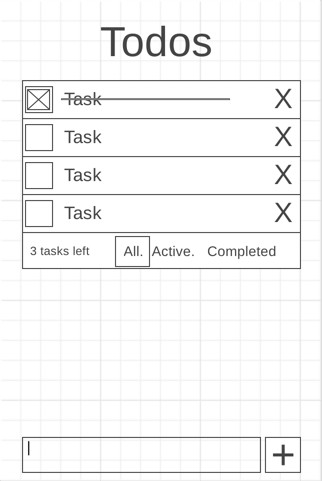

Over the next 2 weeks we will practice what we have learned so far by building a small web application. For this first challenge we will all build a simple To Do tracking application.
Review the details in the simple design document below, then build the application. This will be due at the end of Week 6. You will turn it in as part of your portfolio on the Midterm Checkin.
Details
Description: Build a simple web app to manage a ToDo list. It should allow the creation of new tasks, the viewing of tasks, a process to mark tasks as complete, ability to remove tasks, and the ability to filter by complete/not complete.
Wireframes for each view.

UI actions
Show a list of tasks
Add a new task
Complete a task
Remove a task
Filter tasks (complete/incomplete)
Data sources: localStorage
todo: { id : timestamp, content: string, completed: bool }